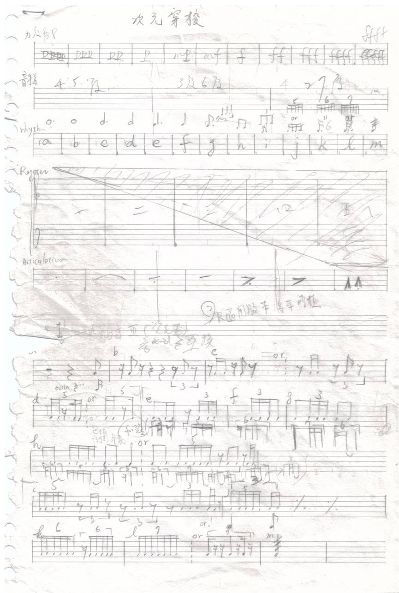
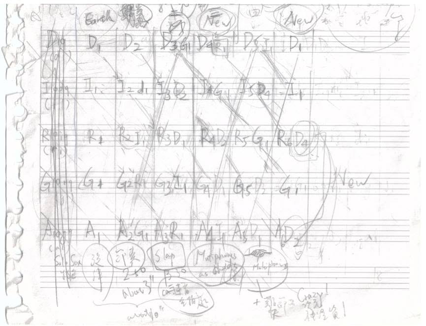
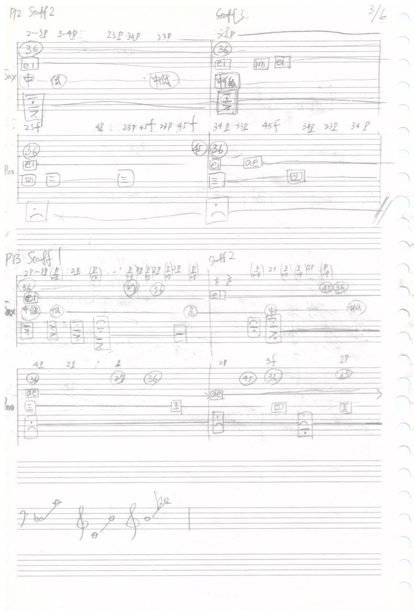

← Back to Interdisciplinary Works
Journey into the World of Dimensions
次元穿梭. For solo saxophone, piano, and electronic music, in six movements. Also released as a VR game and the iOS app VArt Journey (since discontinued).
I see my work as a kind of "imprint" or "footprint" left by an exploration of life.
Program Note
Starting in 2012, I returned to a fascination with quantum mechanics and physics that I had held since childhood. Physics's imaginative research into "parallel universes" and "dimensions" moved me deeply, while a further series of books on dimensions — the Seth Material — reached even further into the interaction of consciousness across dimensional realities that physics cannot explain. From this, a flowing image of the universe's dimensional structure arose in my mind, and I longed to give it a distinctive musical architecture. Together with a commission from saxophonist Chun-Hao Ku, this gave rise to Journey into the World of Dimensions.
The concept of dimensions covered by this work is immense, so musically I simplified the vast idea behind it into symbolic form, built primarily on a unique, transformed variant of total serialism. But because these ideas about dimensions are little known, and overturn most people's assumptions about life and dimensionality, I cannot avoid first laying out — at some length — the background knowledge behind the cosmos's dimensions, and the image of how dimensions operate in my own mind, so that listeners can understand the work's intent more deeply, rather than simply hearing its electronic music as a surface-level, naturalistic soundscape.
Dimensions, From Physics
Although I am not a physicist, there are many popular-science books and videos that explain the concept of dimensions accessibly for a general audience. The most popular research in physics, string theory, holds that our universe[1] should, by mathematical calculation, possess eleven (or more) dimensions. But because the other dimensions are "curled up" within our space, we can only sense the three dimensions we know (three-dimensional space). Because the international physics community defines the scope of physical discussion as limited to what instruments can detect, research into our perception of "dimension" remains quite limited — confined, for now, to mathematical inference, since by current physical accounts the other dimensions are "curled up" and cannot be perceived.[2]
The Seth Material's View of Dimensions
Although a multi-dimensional world may seem beyond discussion within physics, there is indeed a series of books that has explored the reality of multi-dimensional worlds and dreams — known as the Seth Material, promoted in Taiwan today by the New Age Association and by Dr. Tian-Sheng Hsu, a psychiatrist and family physician. This series was received by an American woman writer of the 1960s–80s who, through trance, channeled the teachings of "Seth" — a personality from an unknown dimension — on how the multi-dimensional universe operates, touching on quantum mechanics, psychology, anthropology, biology, history, and medicine. Though it cannot be verified by present-day scientific instruments, its content radically overturns conventional ideas about the dimensions of the universe and the nature of the soul; as a result, from its publication until her death, the author drew the attention of physicists, psychologists, and others internationally who examined and discussed the material. The original Seth manuscripts are now held in the library of Yale University.
The Seth Material emphasizes that the origin of the universe is a body of conscious energy — what may be called universal consciousness, or what human culture generally calls "God." This origin divides itself and leaps into different dimensional realities, and the three-dimensional reality we call "Earth" is one such reality. Every life, every dimensional world, therefore originates from the same energy, each a part of "Him," and "Him" develops and grows through the interactions of every life He has divided Himself into — in other words, through the experience of every life, inner growth is achieved, and the evolution of the universe's collective consciousness is advanced. Life is thus a continuous process of experiencing, learning, creating, and expressing, working toward the "completion of value." And the essential nature of this universal conscious energy is "love" — so all energetic beings of life, from rocks and oceans down to cells, microorganisms, and pathogens, exist within a vast, mutually supportive love, seeking growth as a whole.
Seth says that, because of the limitations of our nervous system, our consciousness is "focused" within three-dimensional space. He uses a metaphor to describe the concepts of "multi-dimensionality" and "focus": dimensions, he says, are like different radio stations, each broadcasting a different program at the same time — just as multiple dimensions (even past and future in time) exist simultaneously — while our nervous system is like a radio's tuner, able to lock onto only one station at a time, unable to tune into every station at once; this is "focus." But unlike radio stations, the content of each "station" — the events occurring in each dimension — actually influence one another. Whether asleep or awake, information moves back and forth between dimensions within our consciousness, selecting or determining the events of each moment as well as past historical events. This view actually echoes contemporary quantum mechanics: because of the random uncertainty of particles, the idea of the "light cone" in parallel spacetime suggests that the present moment is in fact the "point" that determines the parallel spacetimes of past and future — meaning that the history we are familiar with is, in fact, determined only from this present moment, rather than being a truly fixed, unchangeable "fact" that has already occurred.[3]
Dreaming is the moment when a person is freed from neurological limitation and receives the most multi-dimensional information — but most of that information cannot be fully understood by the nervous system, and so our brains process it, through feeling, into distorted images; this further explains why our dreams are often so chaotic. When awake, multi-dimensional information often appears in the form of "inspiration," or further as "apparitions" — these inspirations merge with our thoughts, consciously and unconsciously influencing every choice we make in life, further creating the events of our lives (even collective events) and the state of our physical health. But a human culture centered on science flatly denies multi-dimensional information, thereby limiting the perception and correct understanding we ought to have of other dimensions; rather than simply denying it, we instead distort it into religion or superstition, neglecting and denying our own capacity — and responsibility — to create our own reality.
Seth also notes that not only are events across dimensions interconnected, but every particle, through the perception of different biological systems, plays a different role across different dimensions — meaning a single object may take on different faces in different dimensions. For instance, a hat in our space-time might be a mountain in another dimension, and air in yet another.
My Vision and Motivation — The Transformation of Physical Law Between Dimensions
This further led me to imagine that perhaps the physical laws between dimensions work the same way — that the physical laws of one dimension transform into a different set of laws in another. Suppose the universe has eleven dimensions; because of our sensory-nervous system, we experience only three, while the other dimensions are "curled up," or "out of focus," within our nervous system — and so the physical laws we experience must obey the speed of light, with spacetime continuous and connected. Yet perhaps beings in another dimension, through their own unique perceptual systems, receive three or four of the other eleven dimensions instead — perhaps able to perceive time, perhaps not, or perhaps perceiving time in another way entirely (faster than light, or extremely slowly) — for example, perceiving time the way we perceive space, able to "see" different times simultaneously, the way we might look at a chart of different countries' histories, with their space overlapping, and so on. Naturally, then, a new set of physical laws would govern them — and between those laws and the physical laws of our Earth, there might exist some transforming "equation"[4] that links them, so that the physical laws between dimensions are at once interrelated and entirely distinct. This idea gave rise to the creative motivation behind Journey into the World of Dimensions — I hope, through this piece, to present this concept of worlds between dimensions and the transformation of physical law.
Creative Concept and Approach
To express the world of dimensions through music, though it cannot carry the credibility of science, can guide listeners to imagine and explore such worlds and possibilities in a manner similar to science fiction. Journey into the World of Dimensions is therefore presented as an "abstract, subjective travelogue," in the form of a suite of six movements, describing a protagonist who departs from Earth, journeys through the subjective experience of four different dimensional worlds, and finally returns to Earth. Because the protagonist has, through experiencing other dimensions, inevitably "developed" the ability to sense information from other dimensions, their experience of Earth upon returning must be different — so although the final movement describes Earth, it is, to the protagonist, an Earth "different from before": in other words, compared to the Earth before the journey, it is another, "parallel world" version of Earth.
Because of the spacetime of parallel universes — in which every choice made by every person opens onto a possible parallel spacetime — combined with the limitations of the nervous system, we can almost say that any world or dimension is only called "existing" because there is such a "protagonist" to perceive it. In other words, the existence of any world is "subjective"; without a feeling "protagonist," to claim such a "world" exists would be meaningless. So in composing this piece, it became essential to imagine the subjective experience of an "Earthling" entering a multi-dimensional world. As mentioned earlier, because the human brain and nervous system cannot process most multi-dimensional information, that information is inevitably distorted into images or sounds familiar to us, and so appears as chaotic and illogical as a dream. The six movements, then, each subjectively narrate the experience of a journey through the following six worlds:
- Earth, born of the sea, feels comfortable.
- Arriving at a world with metallic air and ground as hard as steel, I feel quite exhilarated and excited.
- An extremely dry and desolate world, with nothing but sand, wind, and patches of mud — I feel bored and impatient.
- A blazing, violent world — I sense that a war seems to be taking place.
- A world made of gas and spirits, in which I feel "time" alternately stretch and contract.
- Returning to Earth, yet still able to sense the previously traveled dimensional worlds coexisting with it — the ocean's place in space-time is inverted, or the sensation grows chaotic, but in the end, calm returns.
On the auditory level, then, the subjective experience is expressed through the saxophone and piano parts, while the imagery of each dimensional environment — the sea-like Earth, the metallic world, the desolate sand, or the gaseous world — is expressed through the electronic music.
Instrumental Framework — Symbolizing the Laws of Physics
The physical framework between dimensions exists within the piece's internal structure. This work uses a transformed variant of total serialism as its primary underlying framework, with a small degree of permitted flexibility added to symbolize the vitality with which each dimension still strives to exist independently. What follows first examines the primary framework, then the changes and flexibility allowed within its principles.
Primary Framework
Because all physical laws are hidden and unseen, in order to express this quality, the instrumental part of the first movement, Earth, was composed freely. Once complete, I then analyzed and recorded, in strict chronological order (measure by measure, beat by beat — see Appendix C), the sequence of five musical elements used: dynamics, intervals, rhythm, register, and articulation. This recorded sequence of five musical elements symbolizes different matter and the physical laws of Earth.
In the second movement, the first movement's dynamics sequence is applied to the second movement's intervals; the first movement's interval sequence is applied to the second movement's rhythm; the first movement's rhythm sequence is applied to the second movement's register; the first movement's register sequence is applied to the second movement's articulation — and so the second movement is completed. The remaining movements are composed in the same way, each transforming the musical-material sequence of the movement before it, using the same transformational method, to symbolize the relationship and transformation between the internal laws — the physical frameworks — of each dimension. (See Appendix A for the transformational relationships between musical elements.)
Permitted Flexibility — Symbolizing Each Dimension's Vitality in Striving to Exist Independently
Logically, a piece composed entirely according to this base framework should return, in its final movement, to the original form of the first. It does not — because the transformation of musical elements tends to simplify certain material, affecting the movements that follow. The framework must therefore permit a degree of flexibility, the way nature preserves, through mutation, the range of possibilities a species needs to develop, "enriching" back what had been simplified away. Two points of "mutation" freedom are therefore permitted within the framework: the dynamics of the fourth and sixth movements are not built on the articulation sequence of the preceding movement, but are freely chosen instead. In addition, from its midpoint to its end, the rhythm and articulation of the sixth movement gradually become free, breaking from the laws of the other dimensions, so that the piece may fully return to the feeling of Earth before the journey began.
The Layering of the Electronic Music — Symbolizing Dimensions "Curled Up"
Finally, in composing the electronic music, in order to express the idea of certain dimensions being "curled up" within others, from the second movement onward, the electronic music of the preceding movement (sometimes including its instrumental parts) is distorted and transformed, using the software Mammut, into different sonorities that serve as the electronic-music background layer of the current movement. This background layer is usually distorted beyond recognition as belonging to the previous movement — only faintly audible in its register or structural contour — and in this way, the physical concept of dimensions "curled up" within one another is made present.
Furthermore, in the movements that follow, the electronic music contains not only the electronic-music information of the movement immediately before it, but, in theory, the information of all preceding movements as well. For example: in the third movement, since the second movement's electronic music already contains the first movement's electronic-music information, the third movement therefore simultaneously contains the electronic-music information of both the first and second movements — only the second movement's information is present at a greater multiple than the first's (the first movement's electronic-music information has, in effect, been distorted twice, and its volume reduced by a corresponding multiple). And so on, until by the sixth movement, the sonorities of every dimension are contained within it, curled up — in terms of both volume and sonority — according to this same proportional logic.
[1] Present-day physics limits its scope to the universe we ourselves inhabit, and does not address other possible parallel universes.
[2] See the related video: sciencechannel.com
[3] For the related concept of parallel universes, see the discussion of Heisenberg's "Uncertainty Principle" and "Schrödinger's Cat" in quantum mechanics.
[4] Perhaps this "equation," much like the one in the film Interstellar, is built half on the physical laws of our own three-dimensional space, and half on the physical laws of another dimension. Only, perhaps we do not need to fly to the singularity of some distant black hole to find the other half of the equation — perhaps it can be found through dreams instead.
Note: the third movement is not included in this recording.
次元穿梭
我看待我的作品，如同是一種對生命探索的『印記』或『足跡』。
樂曲解說
2012 年開始，我重拾自幼即相當感興趣的量子力學和物理學，物理學中關於充滿想像力的『平行宇宙』與『次元（或維度）』的研究令我深受感動，而另一系列關於次元的書籍『賽斯書』中則更深入的觸及物理學所無法解釋的次元實相間意識的互動。於是，內心產生了一幅會流動的宇宙次元架構的圖像，渴望以一種特殊的音樂架構形式呈現，加上薩克管演奏家顧鈞豪老師的委託，於是這首作品『次元穿梭』於焉產生。
此曲涵蓋的的次元概念相當龐大，因此在音樂上，以象徵式的方式簡化背後龐大的概念，主要採用的整體序列主義架構之獨特變形版本。但畢竟這些次元概念少為人知，且顛覆一般人對於生命和次元的想法，為了讓聽眾能更深入了解樂曲旨意，而非流於聆賞表象如自然光景般的電子音樂聲響，則無法避免的，必須先透過相當篇幅，說明宇宙次元相關背景知識，以及在我心相中的次元運作圖像。
從物理學談維度
雖然我本身不是科學研究人員，但是仿間有許多科普書籍和影片針對次元的概念有深入淺出的說明以供廣泛大眾了解。而物理學中最流行的『弦論』研究認為我們所在的宇宙[1]以數學計算應擁有 11 個（或以上）的維度。但由於其他的維度在我們的空間是『蜷縮』起來的，我們只能感覺到我們所知的三個維度（三度空間）。由於國際物理學家組織有定義物理學討論的範圍必須限定在儀器所能感測之物，因此，許多關於『維度』的感知之研究便相當有限，目前僅限於數學上的推理，畢竟其他的維度以目前物理的說法是『蜷縮』而無法感知的[2]。
賽斯書的次元觀念
雖然多次元（維度） 的世界在物理學中看似無法討論，但確實曾有一系列的書籍，探討過多次元世界與夢的實相，稱作『賽斯書』，目前在台灣由新時代協會和身心科、家醫科醫師許添盛醫生推廣。此系列書是由一位60-80 年代的美國女性作家，因緣際會下因出神，而接收到一位來自『未知次元的人格體－賽斯』的關於多次元宇宙運作機制的傳述，內容涉及量子力學、心理學、人類學、生物學、歷史、和醫學。雖然無法以現今科學儀器來驗證，但書中內容大大顛覆人們對宇宙次元以及靈魂學的觀念，也因此，這位女士在出版書籍後 （到他去世之前），即受國際間到許多物理家、心理學家等關注和針對他的書中內容的探討與檢視，目前該賽斯資料原稿存放於美國耶魯大學的圖書館中。
賽斯書中強調，宇宙的本源是意識能量體，可稱宇宙意識，或是一般人類文化所稱為的『神』，祂將自己分化，躍入到不同的次元實相中，而代表三度空間的『地球』便是其中之一個實相。因此每一個生命、每一個次元世界的本源都始於同一個能量，都是『祂』的一部分，而『祂』透過自身所分化出的每一個生命的互動，來發展成長自己，換句話說，透過每一個生命的體驗，達到內在生命的成長，促使宇宙整體意識本身的進化，因此生命是一個持續體驗、學習、創造、表達的成長過程，以達到生命『價值完成』的目的，而這個宇宙意識能量的本質，就是『愛』，因此所有的生命能量體，大至岩石、海洋、小至細胞、微生物、病菌，都存在於一種廣大的愛的互助合作，以尋求整體的成長。
賽斯說，因著我們的神經系統的限制，我們的意識『聚焦』在三度空間中。他用一個比喻來形容『多次元』與『聚焦』的概念，他提到，『次元』如同收音機裡不同的電台頻道，每個電台頻道同時播放著不同的節目，就如同多次元（甚至時間上的過去和未來）是同時存在的，而我們的神經系統就如收音機的調頻系統，只能對準某一個電台，無法同時對準每一個電台，這就是『聚焦』。而不同於收音機電台頻道，則是，每個電台頻道中的內容，也就是每個次元會發生的事件，其實是相互影響的。無論是睡眠或醒時，次元間的訊息在我們的意識中來回穿梭，以選擇或決定每一刻將發生的事件和過去的歷史事件。這觀點，其實正好呼應當前量子力學，因著粒子的隨機不確定性，關於平行時空『光錐』的觀念，也就是當下這一時間點其實是決定過去和未來平行時空的『點』，也就是說，我們所熟悉的歷史，其實是由現在這一個時間點才決定的，而非真正已經發生不可改變的『既定事實』[3]。
夢境，便是人脫離神經限制，接收多次元訊息最多的時刻，但多半的多次元訊息是無法被神經系統完全理解，因此會被我們的大腦以感覺的方式處理成扭曲的圖象，這也是進一步說明，為什麼我們的夢如此混亂的原因。而醒時，多次元的訊息常以『靈感』或進一步以『鬼影』的方式呈現，這些靈感，與我們的思想融合，於有意識和無意識間，影響我們生活所做的每一個選擇，進一步創造了我們生活事件（甚至群體事件）和身體的健康狀態。但以科學為主的人類文化，卻一概否定多次元的訊息，也因此限制了我們更多對於其他次元的應有的感知與正確認知，反而不是加以否定，便扭曲成宗教或神鬼說，而忽略和否定了我們自身可以對自己實相創造的能力和責任感。
賽斯亦提到，不僅次元間的事件是相關連的，每一個粒子因著不同生物系統的感知，在不同次元間也扮演著不同的角色，也就是說，一個事物在不同次元間有不同面貌。例如在我們時空的一頂帽子，在另一次元可能是一座山，在另又一個次元則可能是空氣。
我的心相與創作動機—次元間的物理法則轉換
至此，賽斯的說法也讓我進一步聯想，也許次元間的物理法則也是如此，即一個次元的物理法則，在其他次元會轉換成另一套物理法則。假設宇宙有 11 個維度，因著我們的神經感官系統，我們只感受到三個維度，而其他的維度在我們的神經系統上，是『蜷縮』的，或是不『對焦』的，因此我們感受到的物理法則，必須受光速的限制，時空是連續且相連的。然而也許在另一次元的生物，因著他們獨特的感知系統，收到的是 11 個維度的其他三種或四種維度，也許能感知時間，也許不行，亦或是以另一種方式感知時間（超光速或是極慢速），例如感受時間如同我們感受空間一樣，他們可以同時『看到』不同的時間，就如我們看一張各國歷史年代圖一樣，而寫許他們的空間是重疊的等等。因此，自然會有新的物理法則主宰著他們，而這些物理法則與我們地球的物理法則之間，也許存在著某種轉換的『數學式』[4]，作為連結，使得次元間的物理法則既相互關聯卻又完全不同。而這樣的想法，便引發了此曲《次元穿梭》的創作動機，我希望藉由此曲呈現這樣次元間的世界與物理法則的轉換概念。
《次元穿梭》創作理念與方式
以音樂闡述次元的世界，雖然無法如科學般可信，但卻可以一種類似科幻小說的方式，帶領大家想像探索這樣的世界和可能性。因此，此曲《次元穿梭》，以一種『抽象主觀的遊記』為呈現方式，以組曲形式，包涵六首樂曲，描述一個主角自地球出發，然後穿梭四個不同次元世界的主觀感受，最後回到地球，然由於經歷過其他次元的主角，必定會『發展出』感受其他次元訊息的能力，因此當最後回到地球時，他對地球的感受必定不同，因此最後一首樂曲，雖描述地球，對他而言卻是一個『與之前不同的』地球，也可以說，相較於為旅行前的地球而言，是另一個『平行世界』的地球。
由於平行宇宙的時空，即每一個人的每一個選擇都存在著一個可能的平行時空，加上神經系統的限制，我們幾乎可以說，任何一個世界和次元，都是因為有這樣的一個『主角』，才得以稱為『存在』的。換句話說，任何世界的存在都是『主觀』，沒有感受的『主角』，那即便去宣稱有那樣的『世界』，就沒有意義。因此在創作此曲時，揣摩一個『地球人』進入多次元世界的主觀感受，便相形重要。如先前所提到，因為人類的大腦和神經無法處理多數多次元的訊息，勢必將這些訊息扭曲成我們我熟悉的視像或聲音，因此便顯得如夢境般的混亂不合理。因此，在這六首樂曲，便分別以主觀的方式解釋為以下六個世界感受的旅行：
- 自海水孕育生命的地球，令人感到舒適。
- 來到一個擁有金屬般的空氣以及堅硬如鋼的地表的世界，我感到相當雀躍與興奮。
- 一個非常乾燥荒蕪，僅有沙與風和部分泥水的世界，我感到非常無趣與不耐。
- 一個火爆酷熱的世界，我感覺到一場戰爭似乎正在進行。
- 一個由氣體和靈體組成的世界，在其中，我感覺『時間』時而延伸、時而縮短。
- 回到地球，但似乎又可感受到同時並存著先前旅行過的次元世界，而海洋在時空的位置也顛倒了，亦或是感受混亂了，但最後終歸平靜。
因此在聽覺上，主觀感受便由薩克管和鋼琴部分呈現，而關於次元環境的視像，例如海水般的地球、或是金屬般的世界、荒蕪的沙塵、或是氣體的世界，皆由電子音樂部分呈現。
《次元穿梭》器樂部分之基本骨架－象徵物理學法則
而次元間的物理架構，則存在於樂曲的內在架構中，此曲以一種變形版的整體序列主義作為主要基本架構，再加以少部分容許的彈性，以象徵次元間仍有企圖獨立存在的活力感。以下先探討主要基本架構部分，再探討在架構原則上所做的改變與彈性：
主要基本架構
由於所有物理法則，是隱而不顯的，為了呈現物理法則的這樣一個特性，第一首樂曲地球的器樂部分，以自由創作的方式完成。完成後則開始依照時間順序（每一小節，每一拍的嚴格的先後順序，如附件Ｃ），詳細分析記錄下所採用的五種音樂元素之順序：力度、音程、節奏、音域、音韻法。而這記錄下的五種音樂元素順序，象徵著不同的物質以及地球的物理法則。
則第二首樂曲，將第一首樂曲的力度順序；用於第二首的音程上，第一首的音程順序，用於第二首的節奏上；第一首的節奏順序，用於第二首的音域上；第一首的音域順序，用於第二首的音運法上；第一首的節奏順序，用於第二首的音域上；第一首的音域順序，用於第二首的音程上。最後完成第二首樂曲。而其餘樂曲創作方式亦相同，皆以前一首的各音樂素材順序，相同的轉換手法來創作以象徵個次元的內在法則－物理學架構之間的關聯與轉換。（音樂元素間的轉換關係方式如附件Ａ）
容許的彈性－象徵次元間企圖獨立存在的活力感
邏輯上而言，完全以基本架構創作的樂曲，應該在最後一曲會回到第一首的原貌，實則不然，因為音樂元素間的轉換，容易造成某些素材被簡化，將影響其後的樂曲。因此，在這樣的架構下，必須容許部份的彈性，如同自然界以突變的方式，保留物種發展所需之各種可能性，已將被簡化過的部份『豐富』回來。因此在架構中容許了兩處『突變』的自由：第四首與第六首的力度不以前一首的音韻法順序為架構，而是自由的選擇。此外，第六首的節奏與音韻法自樂曲中間至結尾處亦逐漸自由，已脫離其他次元的法則，方能完全回到於旅行前在地球的感受。
電子音樂的層次架構－象徵蜷縮的次元
最後，在電子音樂部分的創作中，為了呈現部分次元『蜷縮』於其他次元的概念，自第二首樂曲開始，便將前一首樂曲的電子音樂（有時包含器樂部分），以Mammut 軟體，扭曲轉換成不同聲響，作為樂曲的電子音樂的背景層次。這樣的背景層次，通常已扭曲至無法辨識為前一首樂曲的部分，唯有音域或架構的輪廓上可隱約聽見，如此一來，物理上次元『蜷縮』的概念變得以呈現。
此外，後面的樂曲，其電子音樂不僅包含前一首的電子音樂資訊，在理論上，亦包含了所有（前二首、三首等）的電子音樂資訊。舉例說明，假設以第三首而言，由於第二首的電子音樂已包含第一首電子音樂的資訊，因此，第三首樂曲等於同時包含了第一首與第二首的電子音樂資訊，只是第二首的資訊以倍數多於第一首的資訊（第一首電子音樂資訊等於扭曲兩次，且音量以倍數縮小）。如此一來，依此類推，到了第六首，所有次元之聲響皆包含其中，且是以等比的概念做聲音上（音量和聲響上）的蜷縮。
[1] 現在的物理只限定範圍於我們本身存在的宇宙，不包含探討其他可能存在的平行宇宙
[2] 請見相關影片：http://www.sciencechannel.com/video-topics/space-videos/master-of-the-universe-stephen-hawking-dimensions/
[3] 相關平行宇宙概念請參考量子力學中關於海森堡『測不準原理』與『薛丁格的貓』的部分。
[4] 而也許，這個『數學式』如同電影『星際效應』內容一般，一半以我們自身的三度空間的物理法則為架構，另一半則建立在另一次元的物理法則。只是，我們也許不需要飛到遠在天邊的黑洞的奇異點內才能找到另一半數學式，而是透過夢境便可找到也說不定。
Appendices · 附件


